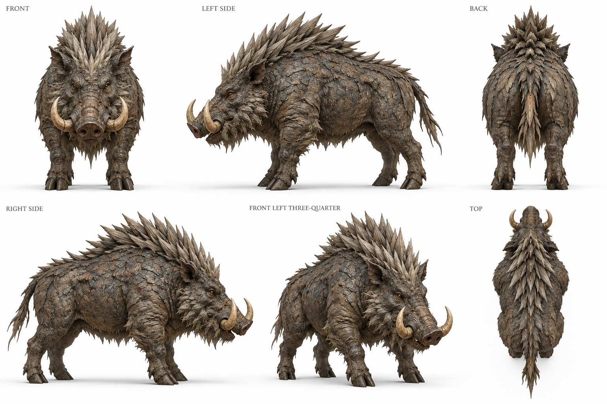
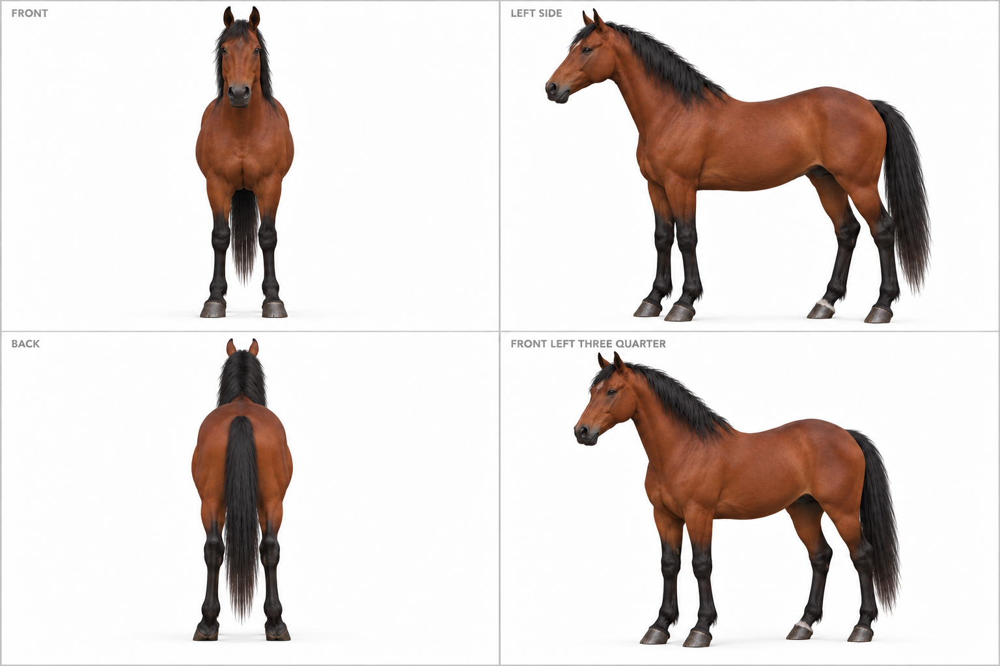
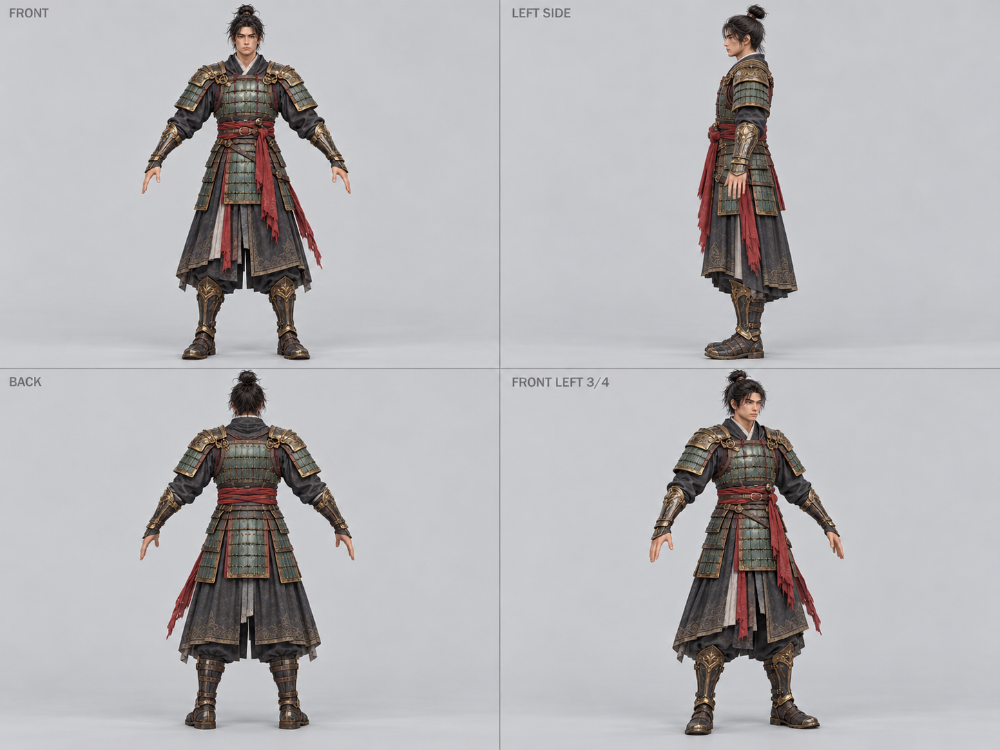
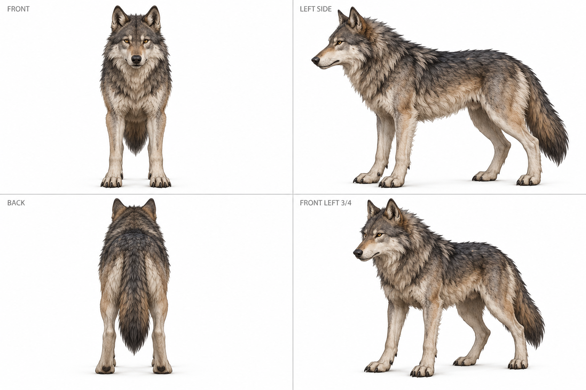
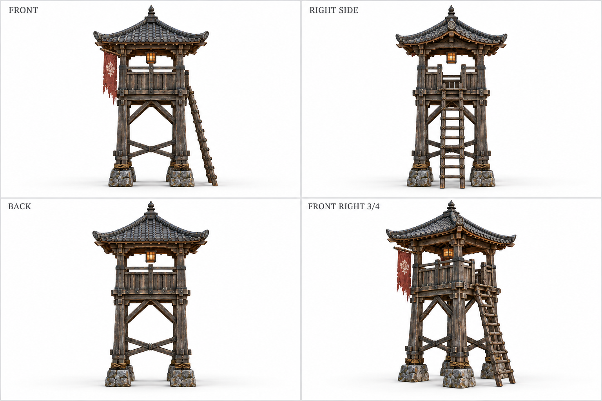
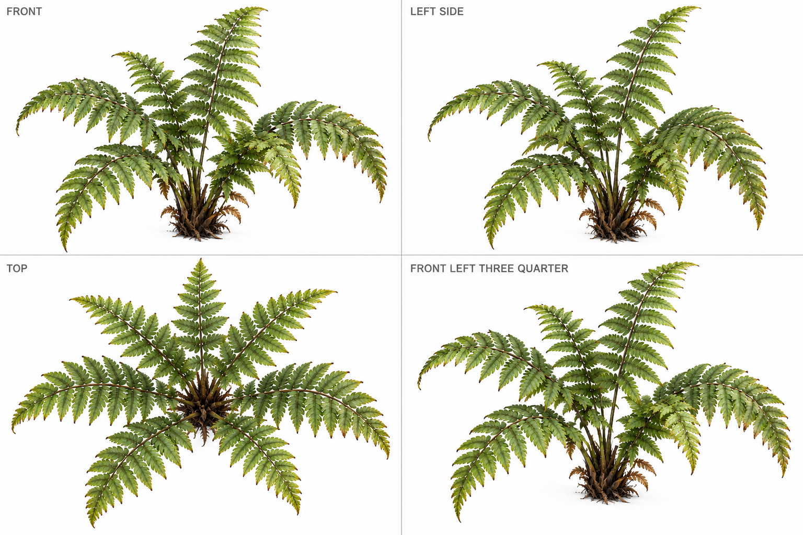
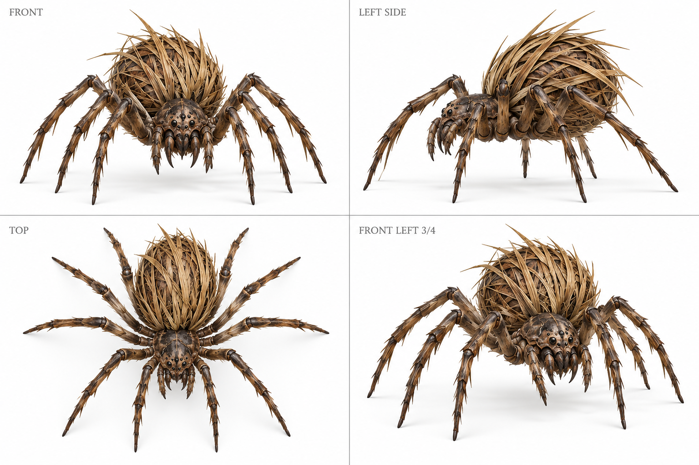
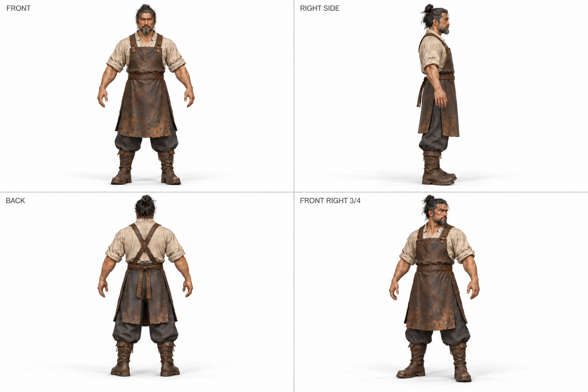
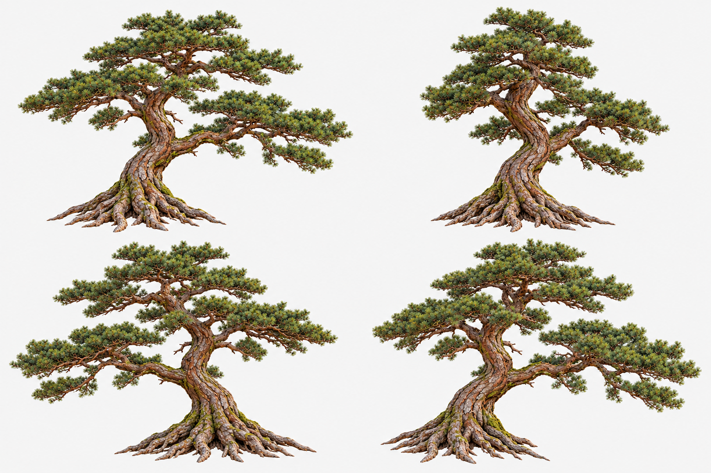
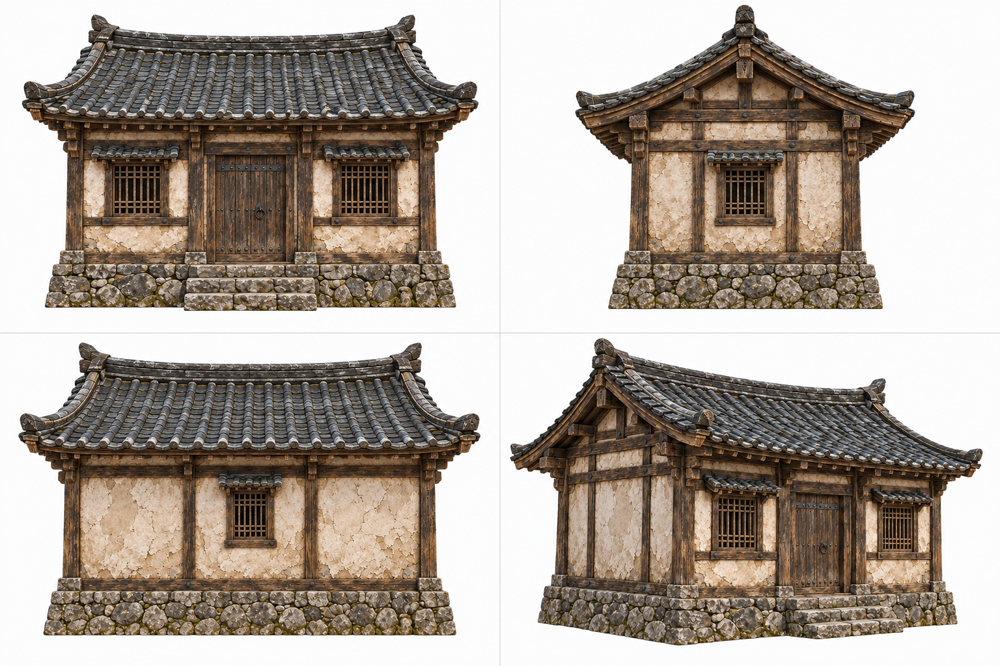

Production reference views
30 practical interpretations of the game concept art, opened and inspected during the full asset rebuild. These images isolate each asset in a neutral pose, describe its main angles and separate horse, rider, tools and equipment. Click a sheet or individual angle to inspect it at full resolution. Only panels marked INPUT condition the shared 3D reconstruction.
Horse markings and blacksmith angle labels were corrected after inspection. Redundant fern angles and an inconsistent tower rear were excluded. Opposite surfaces are design interpretations, not photographs or measured geometry.

Opened original, sheet and extracted views. Stocky boar identity, paired tusks, four legs, dorsal reed plates, brown gray hide and neutral stance agree. Fine plates on hidden sides are inferred. Top and opposite side remain supplementary. Opened opposite-side crop; the same four legs, tusks, dorsal reeds and stocky proportions agree. Include right flank for color coverage; overhead remains supplementary.
Provenance and input contract
Concept asset 90c5a8203d35; reviewed set c8d625d46876. Generated hidden surfaces are inferred. Input review does not accept a generated mesh.
Exact generation promptSheet SHA-256: cdd732196d3b8fb61614bc29920bb4fc34fe02d25a1cc0e8095b03b1d7cef17c

Opened original and corrected sheet. Removed invented white facial blaze; plain bay face, black mane/tail/lower legs, neutral stance and realistic hoof proportions agree. Tack and rider are separate. Hidden markings and individual muscle details are inferred.
Provenance and input contract
Concept asset 7e7d7e05f6f9; reviewed set 31a1ad66a56e. Generated hidden surfaces are inferred. Input review does not accept a generated mesh.
Exact generation promptSheet SHA-256: eae5c9bf9d937fb1d22f75a478f2086073a1df301f07929b9e7ee21c178cf4fc

Opened original and sheet. Adult proportions, black topknot, green lamellar armor, brass trim, red sash and black cloth agree. Neutral A-pose with empty hands and separated feet. Side arms appear vertical by projection; rear costume is an inferred continuation. Hand topology needs mesh review.
Provenance and input contract
Concept asset 96e72c50d51d; reviewed set ed4489ca6a18. Generated hidden surfaces are inferred. Input review does not accept a generated mesh.
Exact generation promptSheet SHA-256: 3003d9dda9a3817f5ecf2b1cc304a88525cc84db95ac246882f01e381fba7202

Opened original and all sheet angles. Gray taupe fur, cream chest and inner legs, golden eyes, lupine muzzle, pointed ears, bushy tail and neutral four-paw pose agree. Fine fur patterns are interpretations, not verified hidden surfaces.
Provenance and input contract
Concept asset ee4651b0a657; reviewed set 943fb9058d52. Generated hidden surfaces are inferred. Input review does not accept a generated mesh.
Exact generation promptSheet SHA-256: 8c5d478aa8a39e3eb45eda32d0106325295e37b0b465766f52c9331246469494

Opened original and sheet. Front, right side and three-quarter agree on four posts, stone feet, raised railing deck, right-side ladder, front-left banner and curved tile roof. Excluded rear panel because its ladder is absent. Orthographic posts align by occlusion; straight structural parts still require mesh inspection.
- back: Initial sheet omitted the ladder in the rear view. Do not condition on this panel until corrected.
Provenance and input contract
Concept asset f6dde5ac99fe; reviewed set 867ad071976f. Generated hidden surfaces are inferred. Input review does not accept a generated mesh.
Exact generation promptSheet SHA-256: 0d9db231c99adbf229b01c00977bbae83833dc85fb3116f7fb4ef0f70ec9d336

Opened original and sheet. Front and overhead show the same compact crown, seven principal green fronds, paired leaflets and weathered brown stems. Use only those distinct angles; other panels are redundant interpretations. Thin leaves may be better built as clean cards instead of neural solid geometry.
- left: Too similar to the front camera to add reliable angle evidence.
- three_quarter: Nearly repeats the front view; supplementary appearance study only.
Provenance and input contract
Concept asset e89698c5b2d1; reviewed set 6c4cc696c4db. Generated hidden surfaces are inferred. Input review does not accept a generated mesh.
Exact generation promptSheet SHA-256: 1269927b8ff34cbb8d3fc806af814c5d4a2087a16760be9a2c556650663e8f62

Opened original and sheet. Removed cropped human and neighboring creature. Overhead shows exactly eight walking legs, four each side; front palps and fangs are distinct. Straw abdomen and brown chitin agree. Rotated overhead input so nose points image up. Some far legs are occluded in side view; inspect leg attachment and foot grounding in mesh.
Provenance and input contract
Concept asset a5d900e10fc7; reviewed set 5c8fae685a1f. Generated hidden surfaces are inferred. Input review does not accept a generated mesh.
Exact generation promptSheet SHA-256: b95563dae06c03f1483e339d2830bc0c04fc2a079156419d0a39d628a57bf983

Opened original and sheet. Same adult smith, graying beard/topknot, linen shirt, leather apron, dark trousers and boots; separated neutral limbs and empty hands. Tools need independent models and attachments. Rear apron straps are inferred.
Provenance and input contract
Concept asset 62040047b53f; reviewed set f8f4afbd66be. Generated hidden surfaces are inferred. Input review does not accept a generated mesh.
Exact generation promptSheet SHA-256: 665c294afa346c7ec1acbdf9713182f2057e126a737465443699dc1853cdaf8a

Opened source and saved sheet. Mature rooted bark trunk and olive boughs remain coherent. Only front and back are distinctly useful; lateral and three-quarter drawings repeat the front silhouette and are excluded. Individual rear branches are inferred.
- left: Repeated front-like camera.
- three_quarter: Repeated front-like camera.
Provenance and input contract
Concept asset c91ab84343a8; reviewed set 47be5d301dea. Generated hidden surfaces are inferred. Input review does not accept a generated mesh.
Exact generation promptSheet SHA-256: ad925a6840520cb313f0ae152f81db479eaa53477b9775acf5afe36332523e5b

Opened source and saved four views. Double front door two front windows, gable on side, rear single window, timber plaster walls and stepped stone base agree. Rear window is an inferred production choice. Roof curvature and straight structural axes require mesh review.
Provenance and input contract
Concept asset 28ab4ff6501b; reviewed set ffbb46e98391. Generated hidden surfaces are inferred. Input review does not accept a generated mesh.
Exact generation promptSheet SHA-256: 39d080161af84ff161957cc3ef9206c05c0e5fc2404ce203cb1ac0cd7b45b2ae
Opened source and saved four views. Straight double-edged blade, jade fuller, squared brass guard and wrapped grip agree. Side records physical thickness. Blade is up in sheet; fitting must honor game grip origin. Engraving is interpreted; straightness needs clean remodeling if neural mesh bends.
Provenance and input contract
Concept asset 25e9dffe8c61; reviewed set c754d7db4a6d. Generated hidden surfaces are inferred. Input review does not accept a generated mesh.
Exact generation promptSheet SHA-256: 8c7b49bfe178c531a86a274922edad1295ff3e918180e09a6ade8520b5c9077c
Opened source and saved full sheet. Bark owl face, amber eyes, twig claws, split root feet, shelf fungus and moss agree across cameras. Neutral limbs separated. Hidden ivy and branch detail is inferred. Side camera is approximate oblique; rig fitting must preserve crouched anatomy.
Provenance and input contract
Concept asset 9d4ebcf4d508; reviewed set eb0cf9b4e5bb. Generated hidden surfaces are inferred. Input review does not accept a generated mesh.
Exact generation promptSheet SHA-256: a21b44f1103d7874909116593a77f96ddbd8e1554ec071a68a818747807724f2
Opened source and saved full sheet. Completed cropped left arm as a symmetrical inferred continuation. Jointed slate blocks, mask, feet, rope belt and red rag agree. The supposed side is oblique and excluded as redundant. Inspect joint separation in reconstruction.
- left: Oblique rather than distinct lateral view.
Provenance and input contract
Concept asset 39bc98234d3c; reviewed set d1b9f29f8891. Generated hidden surfaces are inferred. Input review does not accept a generated mesh.
Exact generation promptSheet SHA-256: 48afdd8f95224e506555099964988281963c7323a84f47bff1ba00aa6e2af2b5
Opened source and saved full sheet. Cracked mask sockets, ropes, bead arms and cloth consistent, no flame reconstruction. Side is oblique and excluded as redundant. Fire remains a separate effect. Rear mask surface and rope attachments are inferred.
- left: Oblique view repeats three-quarter.
Provenance and input contract
Concept asset 6c83aaf94df9; reviewed set 0e590d08ec8b. Generated hidden surfaces are inferred. Input review does not accept a generated mesh.
Exact generation promptSheet SHA-256: d555cac45effd197a606179049f403b004146410faacafff95299955a8526636
Opened source and saved four views. Realistic adult, rust scarf/cape, leather chest belt/bracers, trousers and boots coherent. Empty hands remove held weapon from body reconstruction; game supplies attachment. Neutral stance, separated feet. Rear costume remains an inferred continuation.
Provenance and input contract
Concept asset 3da27c1996c8; reviewed set 8ef7e31f81ee. Generated hidden surfaces are inferred. Input review does not accept a generated mesh.
Exact generation promptSheet SHA-256: 0ae4f863d708c3a2c43c9784151e0dcad33b5ff6bccb947dbdc2ea0226c9064e
Opened original and saved complete production sheet. Angular fractured gray slate wedge, low base and layered lichen bands agree; three-quarter duplicates front and is supplementary. Thin foliage may require clean leaf remodeling after runtime inspection.
Provenance and input contract
Concept asset 390757041a11; reviewed set 6258038ffa5f. Generated hidden surfaces are inferred. Input review does not accept a generated mesh.
Exact generation promptSheet SHA-256: 4aba126e3664ba6807781635cba7a1cf437ab441372ac2a93832731b24ac477d
Opened original and saved complete production sheet. Olive laurel foliage, woody crown, same basic footprint; other elevations repeat similar frontal silhouettes and are supplementary. Thin foliage may require clean leaf remodeling after runtime inspection.
Provenance and input contract
Concept asset 825ead3127e3; reviewed set c12068777edd. Generated hidden surfaces are inferred. Input review does not accept a generated mesh.
Exact generation promptSheet SHA-256: 4510ad05d4e334a6b88613472830fb030e14a3e904bda1e61ab003d413ad3366
Opened original and saved complete production sheet. Olive ribbon blades, dry tips, compact crown, top reveals radial structure; other elevations are redundant. Thin foliage may require clean leaf remodeling after runtime inspection.
Provenance and input contract
Concept asset 7bb6aaf07f27; reviewed set 4804eee992a8. Generated hidden surfaces are inferred. Input review does not accept a generated mesh.
Exact generation promptSheet SHA-256: f2b904473d55ecbe331da181dc0e242bbbe294deb812b62951c16ed5eeff4882
Opened original and saved complete production sheet. Hollow ridged stump, exposed roots and snapped branches rotate coherently; backside knots are inferred. Thin foliage may require clean leaf remodeling after runtime inspection.
Provenance and input contract
Concept asset 440604ba5f25; reviewed set bcf67bec28c4. Generated hidden surfaces are inferred. Input review does not accept a generated mesh.
Exact generation promptSheet SHA-256: 88b5367bf81a46f89fe055eca04eea0af4e3130578dbfa4187697f313cfdbab9
Opened source and saved complete sheet. Broken bark trunk, end-grain depth and snapped branches agree; rear knots are inferred. Mesh straightness and camera-axis fitting remain pending.
Provenance and input contract
Concept asset ad67cb7fa0d1; reviewed set efaa1f83bac4. Generated hidden surfaces are inferred. Input review does not accept a generated mesh.
Exact generation promptSheet SHA-256: 8142c026ea0cd3f61ff4b3534d0995fc1d284efe392b992faf84257f982adab2
Opened source and saved complete sheet. Two posts curved roof central stacked stones and front-right cloth agree. Rear keeps cloth on wrong screen side and is excluded. Stone count is approximate; rebuild stack structurally if needed. Mesh straightness and camera-axis fitting remain pending.
Provenance and input contract
Concept asset ad68a7ed83ab; reviewed set 403f342d436f. Generated hidden surfaces are inferred. Input review does not accept a generated mesh.
Exact generation promptSheet SHA-256: b0a5c2426eae46cbfa7129a30cede6998fbc54bf869b880e4538cc9b748de762
Opened source and saved complete sheet. Front entrance, forked poles, tan canvas and closed rear agree. Some tie pegs are inferred. Mesh straightness and camera-axis fitting remain pending.
Provenance and input contract
Concept asset 6a21f2cb5775; reviewed set 12acee374933. Generated hidden surfaces are inferred. Input review does not accept a generated mesh.
Exact generation promptSheet SHA-256: 08e312a39db7357aebe3a3c526a0661eab4550185a206ece41bd7c06a9815516
Opened source and saved complete sheet. True arch opening, thick stone piers, broken top and relief panels agree. Rear masonry and minor damage are inferred. Mesh straightness and camera-axis fitting remain pending.
Provenance and input contract
Concept asset 5497e23fb588; reviewed set 50eba1a00298. Generated hidden surfaces are inferred. Input review does not accept a generated mesh.
Exact generation promptSheet SHA-256: 406f5892b0d3f217d6658f12df7ea9f29e85b53b4c67dc189ef825ad92a3e00f
Opened source and saved full sheet. Bark root ring, split inward ribs and separate central amber crystal consistent. Side repeats front and is excluded. Exact rib count remains ambiguous under occlusion and must be explicitly repaired to seven in geometry.
Provenance and input contract
Concept asset 5bda526a30eb; reviewed set 4f148246170c. Generated hidden surfaces are inferred. Input review does not accept a generated mesh.
Exact generation promptSheet SHA-256: 8c26da1c7459b614b6bdaf423b1f6142d884acfc4029fdd254b643e2ce369f03
Opened source and saved full sheet. Round brass disc, square through hole, scroll relief and thin edge coherent. Reverse relief is inferred.
Provenance and input contract
Concept asset 558755f812de; reviewed set 3a76b095d7f9. Generated hidden surfaces are inferred. Input review does not accept a generated mesh.
Exact generation promptSheet SHA-256: 9af40d5b8e645aa5bcfe9d59528a97b31a5610d016dbd5fe7e17c0d7979c3e8f
Opened source and saved full sheet. Square timber planks corner iron straps, front diagonal, side plain and mirrored rear brace agree.
Provenance and input contract
Concept asset 577f3e14376a; reviewed set fd4897a06809. Generated hidden surfaces are inferred. Input review does not accept a generated mesh.
Exact generation promptSheet SHA-256: 622fa26d46233e8e9d969d748dadcf665a4dedb7bc86bf5d846fd9d7cff2d5b7
Opened source and saved full sheet. Straight walkway six posts with rope rails and end landings agree. Front/back omit mid-posts by occlusion. Native geometry must preserve usable straight deck.
Provenance and input contract
Concept asset 5e5c4e84ecae; reviewed set 0da71da26fa5. Generated hidden surfaces are inferred. Input review does not accept a generated mesh.
Exact generation promptSheet SHA-256: 104ab82186e201f20b9828cadc23f3ce33695bbd905db97fa4d0af35bdb5f167
Opened original and saved complete four-view sheet. Adult woman, hair bun, teal outer robe cream inner robe brass sash details and boots coherent. Empty hands and separated relaxed A-pose. Rear garment details are inferred.
Provenance and input contract
Concept asset fb68f0aeebe6; reviewed set 4401f084f166. Generated hidden surfaces are inferred. Input review does not accept a generated mesh.
Exact generation promptSheet SHA-256: b01f44e39512cd52523992bf16a30a0e5e20c1de55b7c7aafe0524f65a86c64a
Opened original and saved complete four-view sheet. Adult male headband goatee, linen rolled sleeves tan vest leather apron pouch dark trousers boots coherent. Empty hands relaxed A-pose; rear costume is inferred.
Provenance and input contract
Concept asset 45f6c569708b; reviewed set 5ab25915a048. Generated hidden surfaces are inferred. Input review does not accept a generated mesh.
Exact generation promptSheet SHA-256: f8a1f9207fe4772993828cee5a37b2dcfa470564729112b92d78a36672224ae6
Opened original and saved complete four-view sheet. Separate leather curved seat pommel cantle, patterned dark blanket cream fringe, paired straps/open stirrups agree. Source mounted illustration remains design authority; rear carving is inferred. Thin straps and fitting need topology repair as necessary.
Provenance and input contract
Concept asset 7e7d7e05f6f9; reviewed set dcb55f61ccde. Generated hidden surfaces are inferred. Input review does not accept a generated mesh.
Exact generation promptSheet SHA-256: f8a7e78f71941dd872f1edd04e51abca228ccf4fbfbfa4793c9ba8d55d0bd4a9